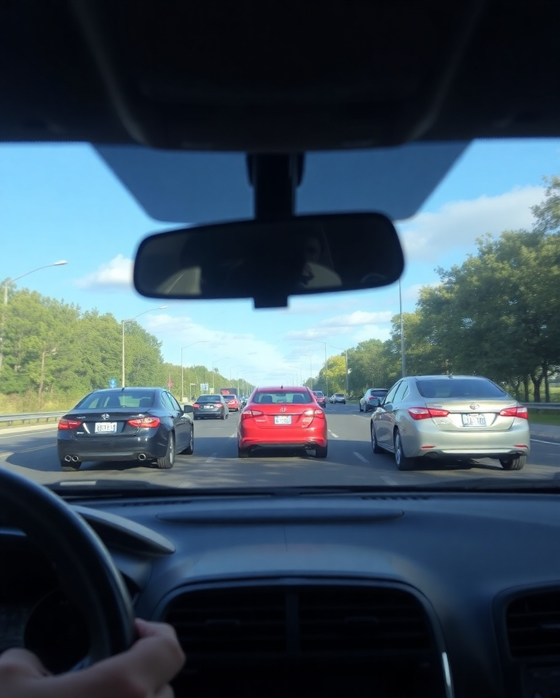
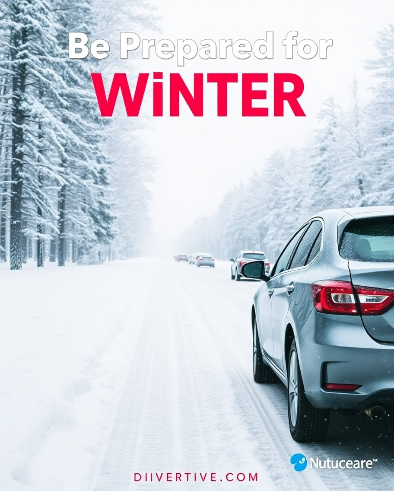
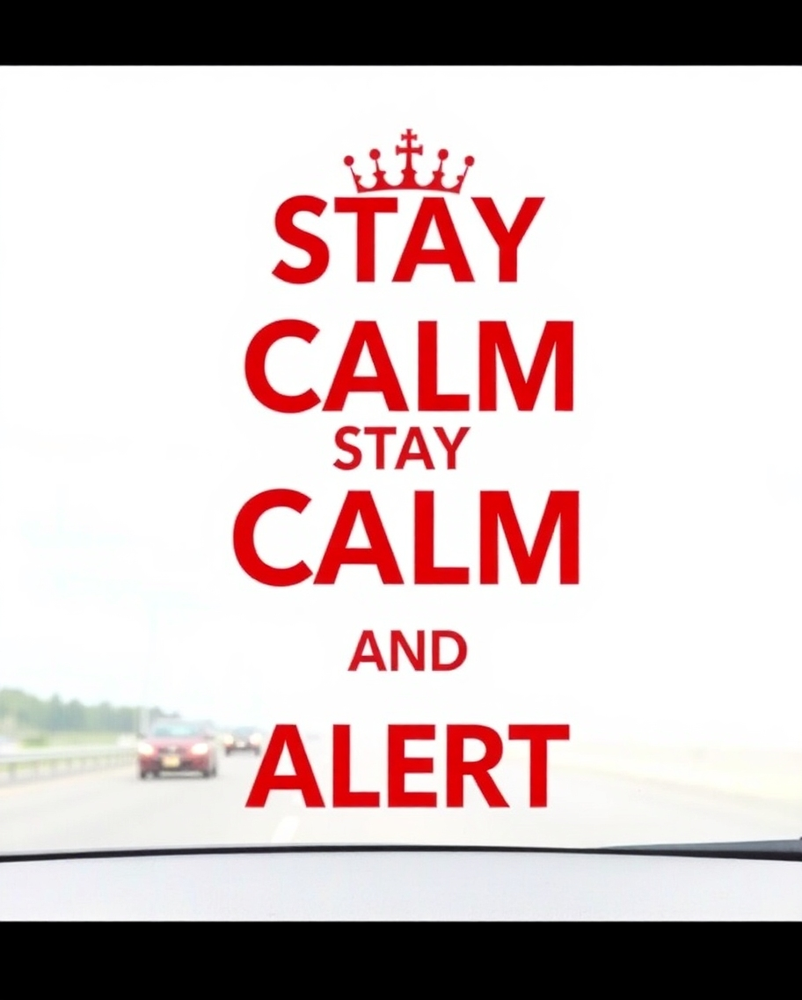

When faced with adverse weather, safe driving practices become even more critical. Here are key tips for navigating through challenging weather conditions:
1. Check weather forecasts before your journey and avoid driving in severe weather if possible.
2. Slow down and increase your following distance to allow for extended braking distances on wet or icy roads.
3. Use headlights in low visibility conditions, such as fog or heavy rain, to make your vehicle more visible to others.
4. Be prepared for winter driving by carrying essentials like a snow shovel, ice scraper, and emergency supplies in your vehicle.
5. Avoid sudden maneuvers and maintain a smooth driving style to reduce the risk of skidding on slippery surfaces.
By following these tips for driving in adverse weather, you can enhance your safety and that of others on the road, no matter the conditions!